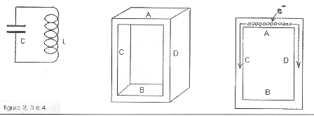

In un giorno del 1945, l’ingegnere statunitense Percy Spencer ripose in tasca un cioccolatino offertogli da un suo assistente, ripromettendosi di mangiarlo più tardi.
Di lì a poco, mentre conduceva delle ricerche con un magnetron (ved. avanti), Spencer si accorse che il cioccolatino dimenticato in tasca si era fuso; l’arguto ricercatore avanzò allora l’ipotesi che le microonde emesse dal dispositivo generassero delle vibrazioni molecolari nei corpi, trasformandosi in calore.
Ne ebbe la conferma quando dei semi di mais posizionati per prova vicino alla guida d’onda del magnetron cominciarono a scoppiettare, trasformandosi in pop-corn...
Spencer intuì immediatamente due ottime cose: la prima di aver trovato un sistema rivoluzionario per cuocere i cibi e la seconda il conseguente business che ne sarebbe seguito; infatti, dopo i necessari perfezionamenti, il primo forno a microonde di dimensioni accettabili fu prodotto dalla Raytheon alla fine degli anni ‘40, il quale, dopo essere stato immesso sul mercato ...fece la gioia delle massaie e la fortuna di Percy!
Cosa si nasconde dentro un normale forno a microonde per cuocere i cibi?
Si nasconde una strana valvola: IL MAGNETRON
Il magnetron a cavità, sviluppato in Inghilterra nei primi anni ‘40 per motivi bellici, fu per un certo periodo uno dei segreti militari più gelosamente custoditi ed influenzò fortemente l’andamento della seconda guerra mondiale; esso aumentò in maniera decisiva le potenzialità di quel rivoluzionario dispositivo che fu (ed è) il radar.
Il magnetron è fondamentalmente un diodo, costituito quindi solo da due elementi: un anodo e un catodo.
L’anodo è formato da un certo numero di cavità ricavate in un unico blocchetto di rame, ognuna delle quali presenta verso il centro un’apertura (figura 1, il dettaglio non è dei migliori...); il catodo si trova sull'asse di simmetria delle cavità ed è in pratica un grosso filamento di tungsteno che emette elettroni per riscaldamento, come avveniva nelle valvole delle vecchie radio della nostra infanzia.
Concettualmente, l’anodo è connesso ad un potenziale positivo ed il catodo è a potenziale zero (in pratica, per motivi realizzativi, l’anodo è a massa ed il catodo ad un forte potenziale negativo, ma il principio rimane identico).

Figura 1
Le evoluzioni di un circuito oscillante
Per cercare di capire il funzionamento del magnetron è prima indispensabile rispolverare il concetto di risonatore, sia pure in maniera semplificata.
Supponiamo di avere un classico circuito elettrico oscillante L-C, formato da una bobina (L) e un condensatore (C) (fig.2).

Figure 2 - 3 - 4
Ora, con uno sforzo di immaginazione (e tenendo presente che le lunghezze d’onda in gioco sono molto piccole, dell'ordine dei centimetri o meno), supponiamo che le armature del condensatore si siano allontanate fino a formare pareti A e B della fig.3 e che le spire della bobina si siano distese fino a trasformarsi nelle pareti B e C.
Ammettiamo ora di caricare in un certo modo la parete A con un gran numero di elettroni (fig.4); questi tenderanno per repulsione a raggiungere la parete opposta B, e scorrendo lungo le pareti C e D creeranno un campo magnetico che funzionerà da volano e che provocherà il prolungarsi della scarica; infatti gli elettroni (ora in troppi sulla parete B) cercheranno di riportarsi in senso opposto nella posizione di partenza, e così via.
Alla prima scarica ne seguirà quindi un’altra in senso inverso, e le cose andrebbero avanti così all’infinito se le perdite nel materiale fossero nulle.
Col ragionamento di cui sopra, il circuito oscillante si è trasformato in una specie di cassa armonica, che è la più vera ed intuitiva espressione di un risonatore.
Come la frequenza di risonanza di un circuito L-C dipende dal numero delle spire della bobina e dalla capacità del condensatore, così la frequenza in un risonatore dipenderà dalle sue dimensioni fisiche.
Esattamente come la canna di un organo: canna grossa --> frequenze basse, canna piccola --> frequenze acute.
Dal risonatore al magnetron: il passo non è breve ma fattibile!
E' quello che vedremo la prossima volta.
3 commenti